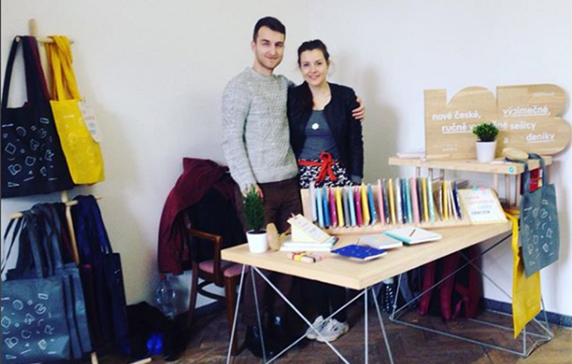
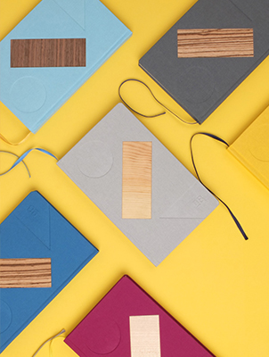
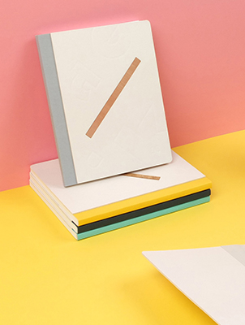

notebuuk

Produktový design

S láskou k papíru
Nová značka prémiových, ručně vyráběných deníků. Od sítotisku přes skládání papíru a šití až po vytvoření obalu a prodejního stojanu. Značka vznikla ve spolupráci s Christianem Jánským. Více info o sešitech a o možnosti navrhnutí a vyrobení sešitů přímo pro Vás na notebuuk.cz. Foto Filip Beránek a Christian Jánský.